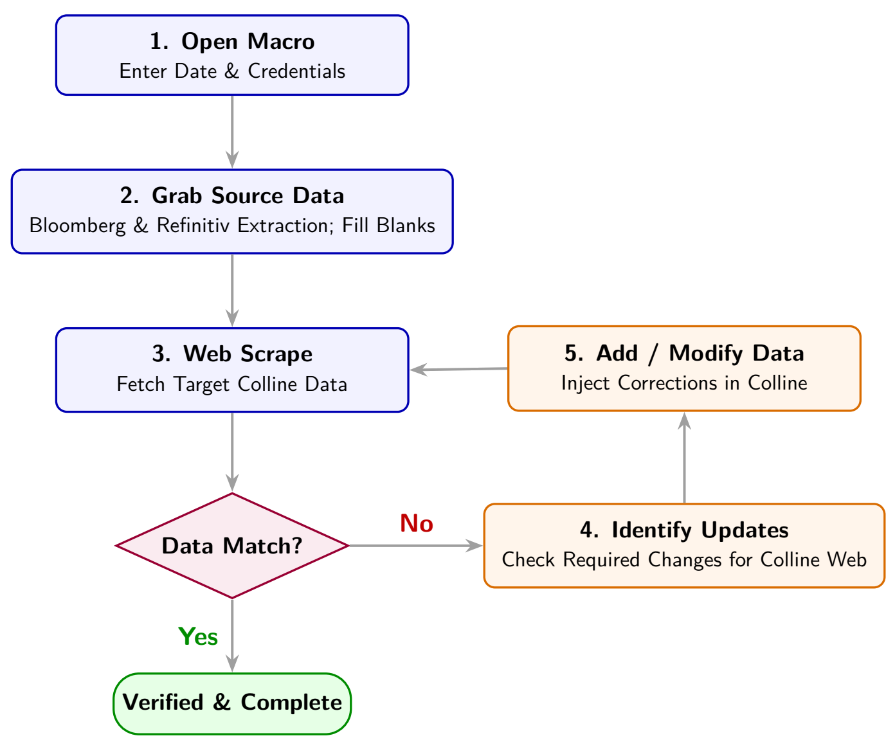

Colline
A browser-driven reconciliation pipeline that brought a previously automated market-data workflow back after Internet Explorer was retired.
The Colline process compares data in a target web portal with internal market-data records. When Internet Explorer was decommissioned in 2022, the legacy automation stopped working and the team had to return to manual extraction, reconciliation and correction. The task was a chance to replace the brittle browser dependency with a workflow that could run in current browsers.
I built the pipeline with Selenium Basic and made it compatible with Google Chrome and Microsoft Edge. It starts by collecting the required Bloomberg and Refinitiv inputs, filling gaps in the source data, and scraping the target Colline records. The two datasets are then reconciled to identify exactly which entries need attention. Verified changes are sent back to the portal through browser automation, and a second download checks that the resulting records match the expected state.

The closed-loop check matters because a successful browser action alone does not prove that the portal stored the intended value. By downloading the updated data and reconciling it again, the workflow confirms the result before the run is treated as complete.
The pipeline saves about 60 minutes each month and became the team's first web-scraping workflow for a static site. It also gave later browser automation work a practical pattern for extraction, controlled updates and post-run validation.